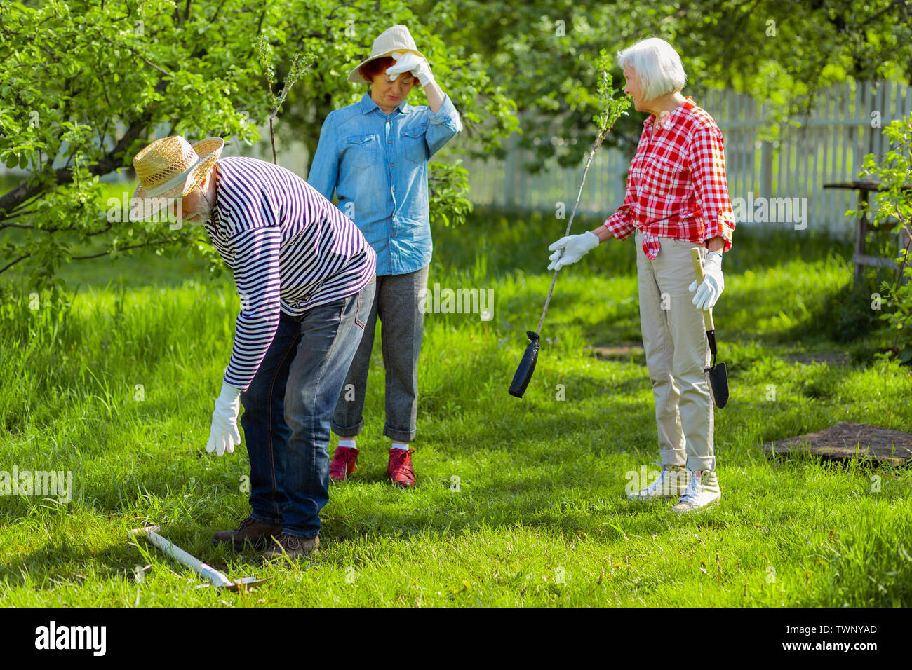

Local Loop is a community powered board where neighbors and students share skills, favors and micro-help.
Whether you can tutor math, walk a dog, fix a laptop, or help someone move a couch, Local Loop connects you
with people nearby who need exactly that.
The idea started on a university campus where students were already trading help informally one person
editing a résumé, another lending a drill, someone else giving guitar lessons. Local Loop just gives that
existing generosity a searchable, organized home.
Every post is either an Offer ("I can help with…") or a Request
("I need help with…"). No money required though members are free to arrange small thank-yous if they wish.
The goal is simple: make it easy to ask for help without feeling awkward and easy to offer help without
it getting lost in a group chat.
Local Loop is currently a neighborhood-and-campus pilot. It works best in tight communities where trust
is already high and people actually run into each other at the grocery store.
Post an offer or a request in under a minute
Browse by category — Tutoring, Errands, Tech Help, Creative, and more
Filter by "Offering" or "Requesting" to find exactly what you need
Mark a post as "Completed" once the favor is done
Leave a simple rating so good helpers get recognized
Report or hide any post that feels off — safety first
Name: Local Loop Community Team
Tel: 0256677967
Email: localloop@gmail.com
